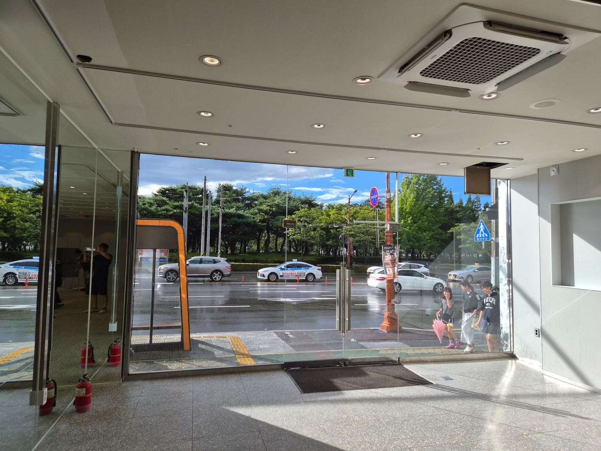
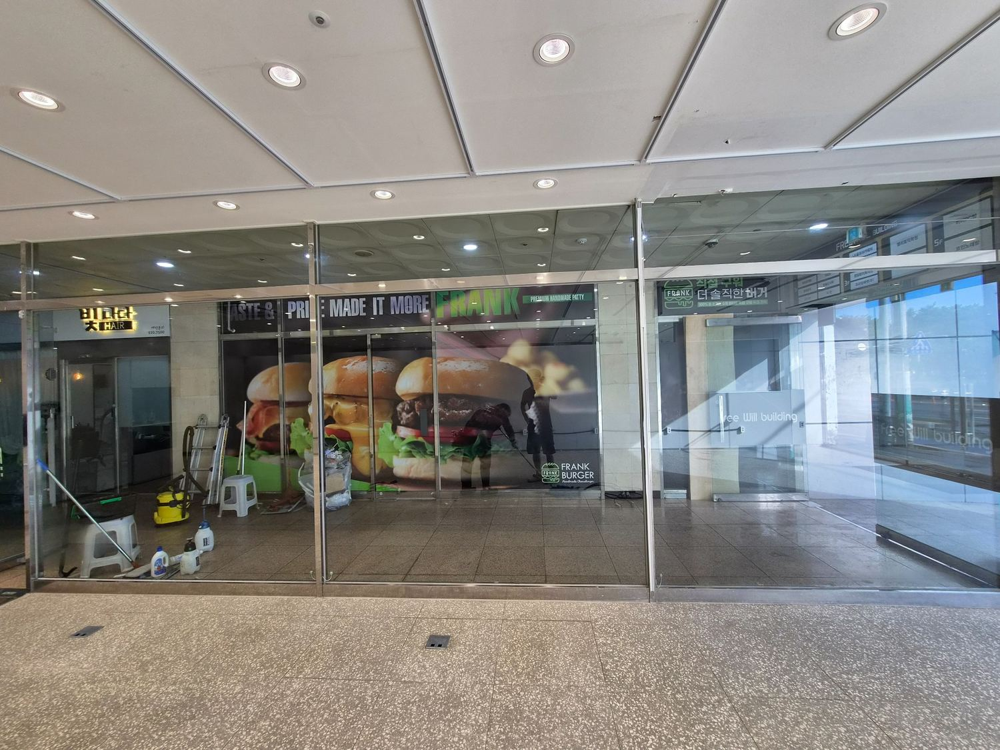
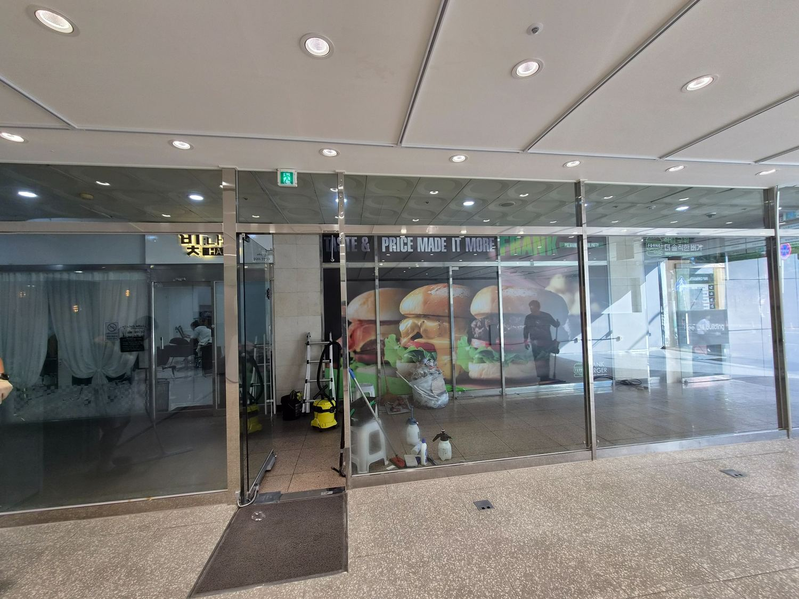
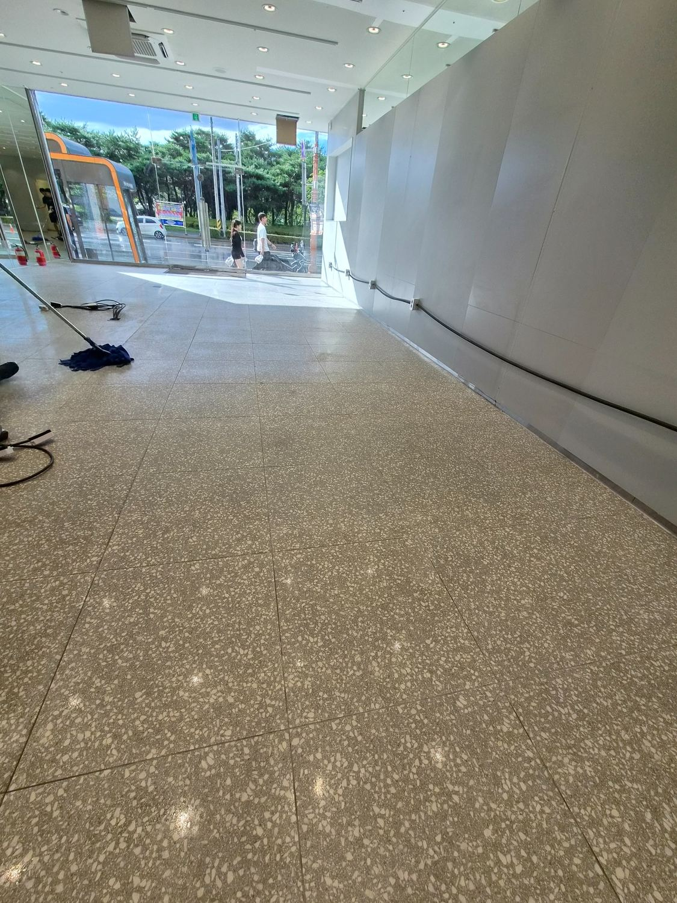
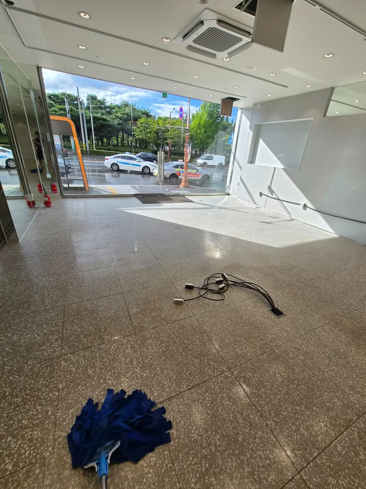
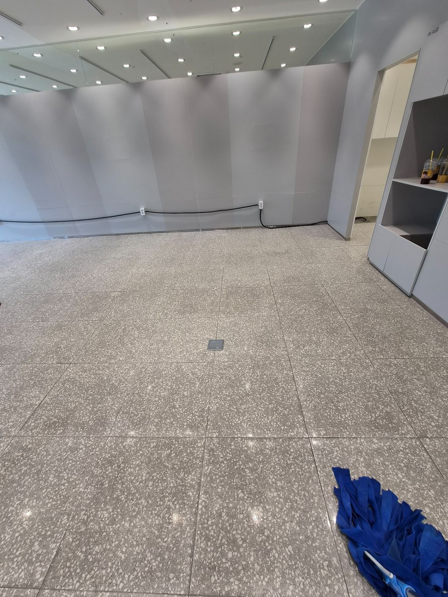
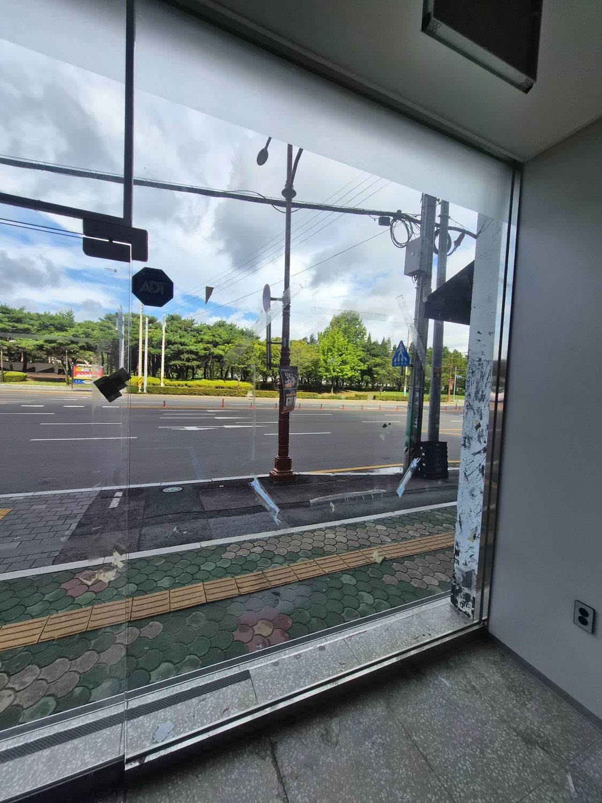
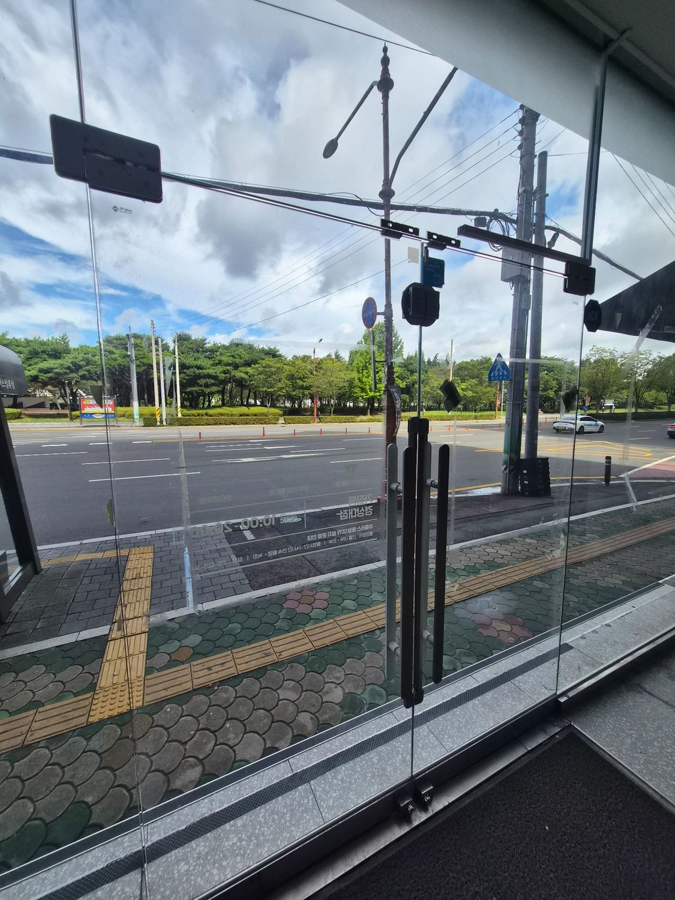
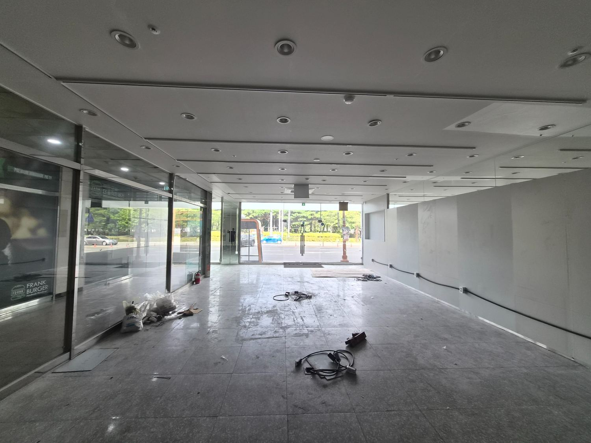

상가 내부는 바닥·유리·공용동선을 함께 봅니다
김해 상가청소는 바닥만 닦는 작업으로 끝나지 않습니다. 출입구 유리, 내부 바닥, 벽면 주변, 코너와 전기배선 주변처럼 오염이 남기 쉬운 구역을 함께 확인해야 전체 공간이 정돈된 인상을 줍니다.
사진처럼 집기 철거 또는 공사 후 먼지와 잔여물이 남은 상가는 오픈 전 한 번에 정리할 범위를 먼저 나누는 것이 효율적입니다.

김해 상가청소에서 확인한 주요 공간



공사 후 잔여물은 가장자리와 바닥 줄눈에 남기 쉽습니다
상가 공사나 철거가 끝난 뒤에는 큰 폐기물을 치운 뒤에도 미세분진, 접착 잔여물, 조각과 먼지가 바닥과 모서리에 남아 있는 경우가 많습니다. 실제 청소에서는 넓은 면적만 빠르게 지나가기보다 가장자리와 동선을 나누어 확인합니다.
바닥 재질과 오염 상태를 확인한 뒤 현장에 맞는 장비와 세제를 사용하고, 유리와 출입구는 얼룩이 남지 않도록 별도로 정리합니다.

오픈 전에는 에어컨 상태까지 같이 확인하면 좋습니다
상가 내부 청소와 함께 천장형 시스템에어컨의 오염 상태를 확인하면 오픈 후 다시 집기를 옮기는 번거로움을 줄일 수 있습니다. 퍼펙트케어는 상가청소와 별도로 시스템에어컨 분해청소 상담도 가능합니다.
에어컨은 기종과 설치환경에 따라 분해 범위가 달라지므로 현장에서 수량과 구조를 확인한 뒤 안내합니다.

상가청소 실제 작업사진



김해 상가청소는 필요한 범위만 묶어 상담합니다
상가 내부 바닥, 전면 유리, 공용화장실, 에어컨 분해청소, 오픈 전 대청소 등 현장 상황에 따라 필요한 작업만 선택할 수 있습니다. 정확한 비용은 면적만으로 계산하지 않고 현장 오염도와 작업 범위를 확인한 뒤 무료 방문견적으로 안내합니다.
김해 상가청소 무료 방문견적
오염도와 바닥·유리·에어컨 등 실제 작업범위를 확인한 뒤 안내드립니다. 대량건도 문제없습니다.